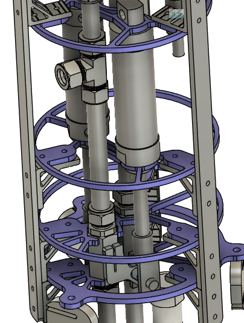
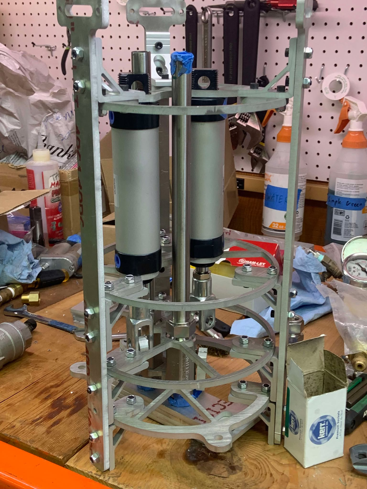
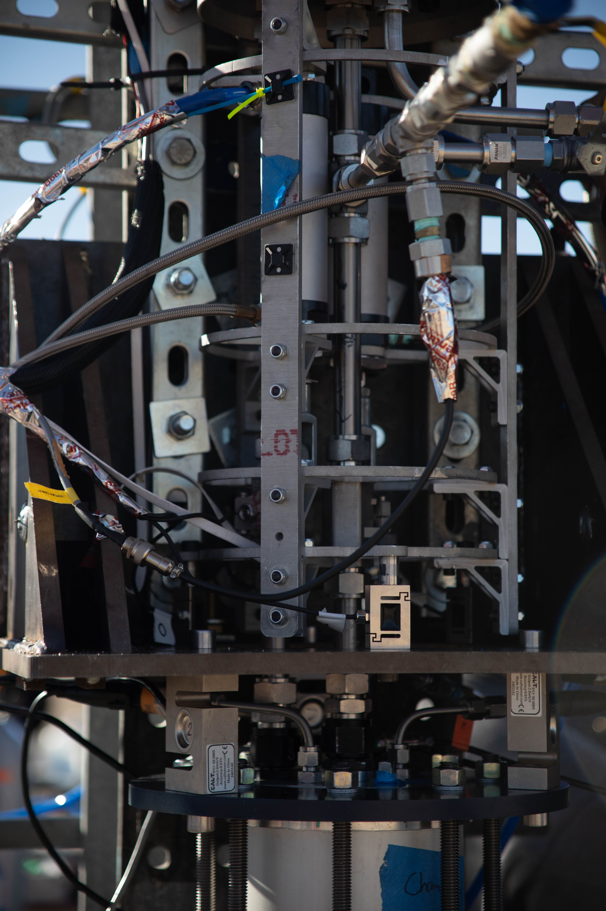
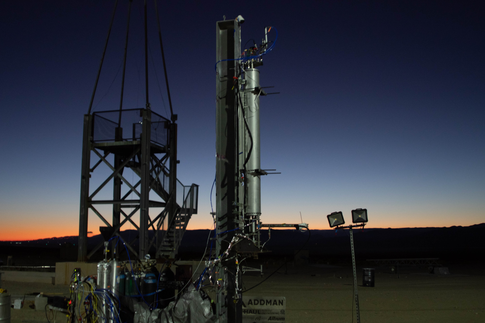

Liquid Rocket Test Stand Main Valves
Vertical Test Stand Overview
Eureka 3 is my undergraduate student rocketry team's third liquid rocket and is the most recent step the team is taking towards developing a liquid spaceshot. This rocket marked a transition for the team away from utilizing mostly off the shelf hardware towards developing our own mass optimized custom flight hardware. Specifically with Eureka 3 the team sought to utilize a set of concentric tanks with the outer tank containing the oxidizer, nitrous oxide, and the inner tank containing the fuel, isopropyl alcohol (IPA). This would allow for the nitrous oxide ullage to push a piston in the IPA tank pressurizing them both. This configuration had never been attempted before by the team and as such required the creation of a stand to test these tanks in hot-fire conditions.
To create a stand that could be used to validate our tank and piston's design an entirely new propulsion feed system needed to be developed from the ground up. This included an all new fill system, ignition system, ablative engine, and set of main valves that we knew were reliable to isolate issues to just the custom tanks. As such I was tasked with creating a main valve assembly that included both the plumbing and structure that was robust, reliable, and easily repairable to be used in this test stand.


Main Valve Design, Manufacturing, and Assembly
Since the main valves needed to be reliable i chose to utilize a simple heritage design similar to the main valves used on the team's two previous rockets. This design utilized two COTS ball valves, one for each propellant, that are actuated by two COTS pneumatic cylinders. These pneumatic cylinders were connected to the ball valves via a custom-designed handle that attached to the ball valves at the stem. On the other side of the handle was a slot that interfaced with a clevis attached to the pneumatic cylinders. This allows the clevis to slide along the slot as the pneumatic cylinder actuates, rotating the valve 90 degrees, either fully opening or fully closing the ball valve. Pneumatic cylinders were specifically used due to their fast response time as these valves needed the ability to open and close instantaneously such that the necessary valve timing could be achieved. Additionally, only two states were needed for these valves, fully open and fully closed, removing the need for actuators like motors that can achieve in between states. Additionally the plumbing in the assembly was designed to minimize and in some cases completely remove bends in order to reduce the pressure loss experienced between the tanks and the injector. This provided the additional benefit of making the main valve assembly area fairly large and as such easy to access during test operations.
For the surrounding structure a simple set of waterjetted plates were designed to constrain the valves in 2 dimensions with the fittings on either side of the valve constraining it vertically. These plates were able to be fairly thin due to the thrust being completely absorbed by the steel thrust transfer plates below. The rails were designed by a different member of the team and served as the attachment point between the constraining rings and the tanks above fully holding the structures in place.
Due to the fairly simple design and the widespread use of off the shelf parts the manufacturing and assembly of the main valve assembly was fairly straightforward. In terms of manufacturing both the handles and the retaining rings were cut out of 6061 aluminum on an OMAX waterjet cutter. The handles were cut out of 3/8 in and 1/4 in respectively. There were a few issues with the initial assembly due to previously looked over collisions between parts and due to differences between the CAD of the valves and reality but these issues were quickly fixed with a revised CAD and re-cutting on the waterjet. Once these conflicts were sorted, assembly was straightforward and went quickly.

Unit Testing
Before integrating the main valve assembly with the rest of the test stand a quick unit test was performed to ensure the valves were operating as expected. To do so the pneumatic lines were connected to a set of solenoid valves and then to a nitrogen pressurized gas cylinder. In this way were were able to use the solenoids to control the opening and closing of the valves verifying their range of motion and responsiveness. As can be seen, the test was a success indicating that the assembly was ready to be integrated into the rest of the test stand.

Final Integration and Hot-Fire
Building off of the unit test, the main valve assembly was successfully integrated into the vertical test stand. THe goal of this test stand was to enable the testing of our new tank architecture in hotfire conditions. To make it to hot-fire and series of cold-flow tests were performed with the valves working nominally throughout the cold-flow campaign. This built up confidence that the valve would work correctly under hot-fire conditions. From the video on the right it can be it can be seen that despite the issues that were experienced with ignition and hard-starting, the main valves worked nominally during the hot-fire test, validating the reliability of the design.
The root cause of this hard-start was determined to be issues with the way our igniter was set up. The team utilized an up-the-throat style igniter meaning that a small solid rocket motor was pointed at the injector face to ignite the propellant mixture. This style of igniter is designed to be shot out of the chamber once the propellants ignite, clearing up the chamber for proper combustion. In this case the igniter was not strong enough to ignite the oncoming mixture due to the oncoming velocity of the propellants being too high as well as nitrous being a notoriously hard fuel to ignite in its liquid phase. This compounded with the premature release of the igniter from the chamber resulting in it landing within the cloud of unburned propellants settling outside of the chamber. This resulted in the outside gasses igniting and flashing back into the chamber causing the hardstart. This indicates that despite the sub-par hot-fire the valves were not the issue as such their validation under hot-fire conditions still stands.
Gallery
